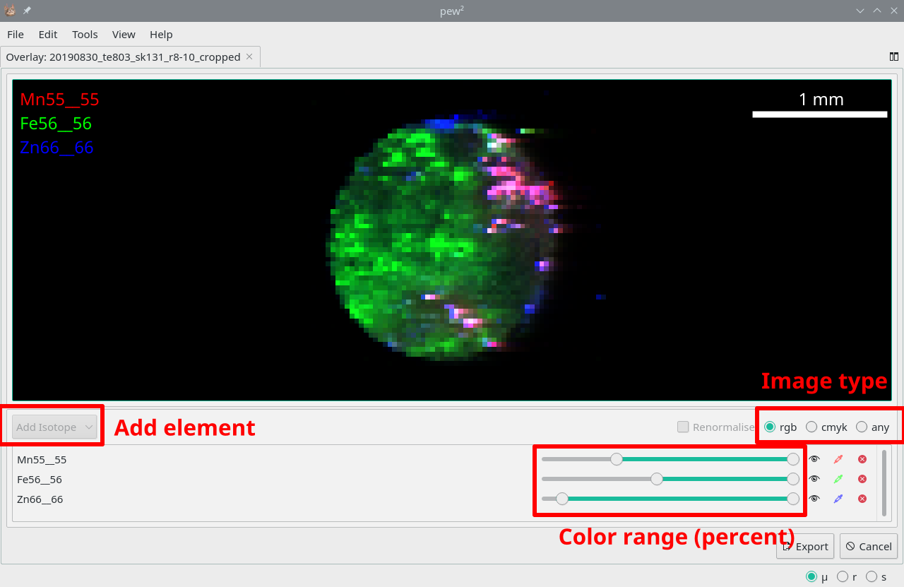
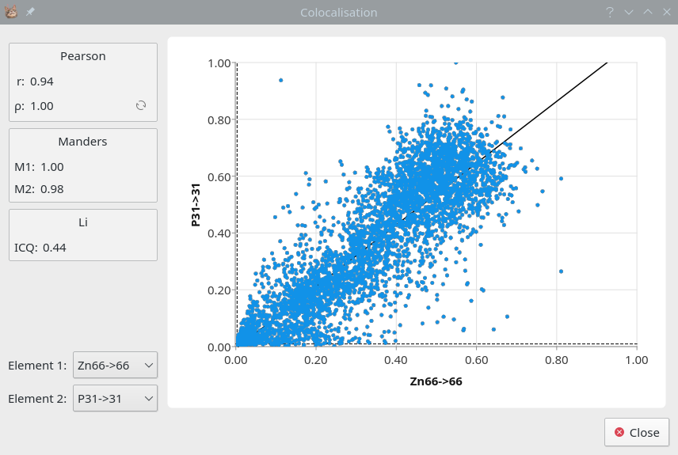

8. Overlays and Colocalisation¶
It is often desired to analyse the spatial relationship of two or more elemental images. The Overlay Tool can do this visually while the Colocalisation Dialog provides a numerical representation.
8.1. Overlays¶
Tools -> Overlay Tool
The Overlay Tool allows overlaying of up to three elements using the RGB or CMYK modes, or any number using the ‘any’ mode. If using the any mode take care to to over-saturate the image.

The Overlay Tool with three elements in RGB mode.¶
8.2. Colocalisation¶
Image Context Menu -> Colocalisation
Selection Context Menu -> Statistics
Colcalisation can be used to quantify the spatial relationship between two elements. The Colocalisation dialog provides numerical and graphical representations of colocalisation using the Costes method. This method automatically eliminates background values before performing colocalisation, however the image must have a large enough dynamic range.

The Colocalisation dialog.¶